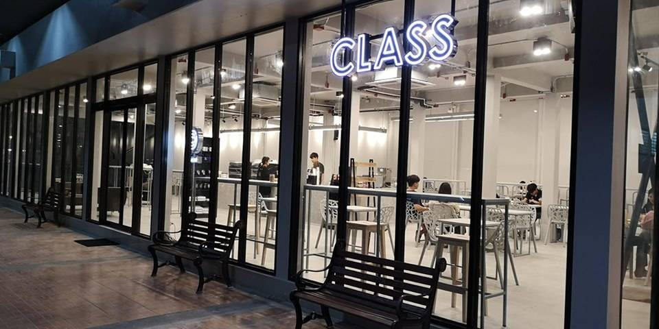
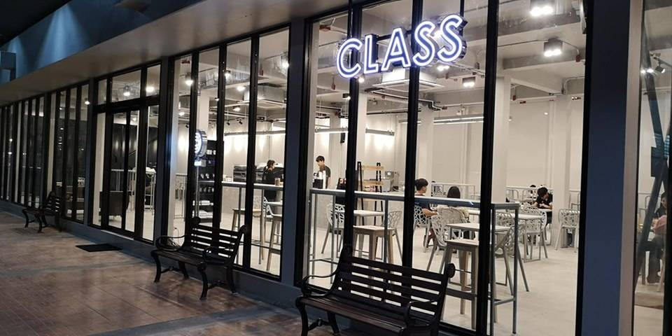

Most View

Hotto bun
บัน ของฮอตโตะ บัน คือ เบอร์เกอร์สไตล์ญี่ปุ่น แป้งนุ๊มมม~นุ่มมมมมม
สอดไส้ชิ้นโต!!! ราดด้วยซอสญี่ปุ่นเข้มข้นสไตล์ไทย สูตรเฉพาะของ ฮอตโตะ บัน เท่านั้น
BUN
แป้งบันหนานุ่ม นวดขึ้นจาก แป้งสาลีชั้นดี และวัตถุดิบคัดสรร ไม่ใช้สารเสริม ไม่มีสารคงรูป ไม่มี ผงฟู ผ่านการนึ่งด้วยความร้อน ที่พอเหมาะ จนออกมาสวย หอม นุ่ม น่ารับประทาน
MEAT
เนื้อสัตว์ ที่เราเลือกนำมาใช้ คัด เฉพาะส่วน เพื่อความอร่อยตาม ฉบับฮอตโตะ บัน จากฟาร์มที่ได้ มาตรฐาน ปลอดภัย ไม่มีสาร กันบูด และ ไม่มีผงชูรส
HOTTO SAUCE
ฮอตโตะ ซอส ทำจากผักและ ผลไม้สิบกว่าชนิด ให้ความหอม อร่อยแบบญี่ปุ่น แต่มีความเข้มข้น สไตล์ไทย สูตรเฉพาะของฮอตโตะ บัน เท่านั้น
VEGETABLES
เราเลือกใช้ผักไฮโดรโปนิกส์ ที่ปลูกในฟาร์มระบบปิด ล้างสะอาด สดตรง จาก Win&Focus Farm
Review : อร่อยดีครับ ใครเบื่อเบอร์เกอร์แบบตะวันตก ลองดูได้ แป้งนุ่มดี ซอสอร่อยมีความญี่ปุ่นผสมกับความไทยๆ - คุณแจฮยอน
Location : สาขา มธ อยู่ในสนามบอล Flick (ข้างสนามฟุตบอล Flick TU ธรรมศาสตร์รังสิต) อยู่เยื่องกับอาคารเรียนรวม SC สังเกตได้จากลานสเก็ตบอร์ดและสนามฟุตบอล Flick ร้านอยู่ข้างๆ ถ้าหันหน้าเข้าสนามร้านอยู่ทางมือ
Open : เปิดบริการทุกวัน : 11:00 - 21:00
Tel : 0959528504, 0863270271
BUN
แป้งบันหนานุ่ม นวดขึ้นจาก แป้งสาลีชั้นดี และวัตถุดิบคัดสรร ไม่ใช้สารเสริม ไม่มีสารคงรูป ไม่มี ผงฟู ผ่านการนึ่งด้วยความร้อน ที่พอเหมาะ จนออกมาสวย หอม นุ่ม น่ารับประทาน
MEAT
เนื้อสัตว์ ที่เราเลือกนำมาใช้ คัด เฉพาะส่วน เพื่อความอร่อยตาม ฉบับฮอตโตะ บัน จากฟาร์มที่ได้ มาตรฐาน ปลอดภัย ไม่มีสาร กันบูด และ ไม่มีผงชูรส
HOTTO SAUCE
ฮอตโตะ ซอส ทำจากผักและ ผลไม้สิบกว่าชนิด ให้ความหอม อร่อยแบบญี่ปุ่น แต่มีความเข้มข้น สไตล์ไทย สูตรเฉพาะของฮอตโตะ บัน เท่านั้น
VEGETABLES
เราเลือกใช้ผักไฮโดรโปนิกส์ ที่ปลูกในฟาร์มระบบปิด ล้างสะอาด สดตรง จาก Win&Focus Farm
Review : อร่อยดีครับ ใครเบื่อเบอร์เกอร์แบบตะวันตก ลองดูได้ แป้งนุ่มดี ซอสอร่อยมีความญี่ปุ่นผสมกับความไทยๆ - คุณแจฮยอน
Location : สาขา มธ อยู่ในสนามบอล Flick (ข้างสนามฟุตบอล Flick TU ธรรมศาสตร์รังสิต) อยู่เยื่องกับอาคารเรียนรวม SC สังเกตได้จากลานสเก็ตบอร์ดและสนามฟุตบอล Flick ร้านอยู่ข้างๆ ถ้าหันหน้าเข้าสนามร้านอยู่ทางมือ
Open : เปิดบริการทุกวัน : 11:00 - 21:00
Tel : 0959528504, 0863270271

YAKISHI Yakiniku
อาหารแบบจัดเต็มสำหรับชาวรังสิตโดยเฉพาะ มี เนื้อ ซีฟู้ด แซลมอน ซูชิ
และซาชิมิแบบไม่อั้น! สำหรับราคาจะมีให้เลือกทานถึง 3 ราคา ดังนี้ 219 บาท++ (248 Net.)
ราคานี้จะเหมาะสำหรับคนที่เน้นหมูเป็นพิเศษ เพราะทางร้านมีให้เลือกถึง 8 อย่าง
เพิ่มเติมด้วยซูชิและของทานเล่น ถัดมาคือราคา 299 บาท++ (328 Net.)
ราคานี้จัดหนักสำหรับสายเนื้อโดยเฉพาะ เพิ่มเติมด้วยซีฟู้ดและชีส และสุดท้ายคือราคา 499 บาท++ (528
Net.) ราคานี้จะได้ครบเครื่องทั้งเนื้อนำเข้า เซ็ตซาชิมิ กุ้งแม่น้ำ และซูชิอีกนับไม่ถ้วน
เรียกได้ว่าคุ้มค่าสุด ๆ สำหรับเครื่องดื่มจะมีเครื่องดื่มรีฟิลเติมได้ไม่อั้น (+29 บาท)
และสามารถทานได้ทั้งหมด 90 นาที
Review : เนื้ออร่อยๆ มีให้เลือกหลากหลาย ใครไม่กินเนื้อก็มากินได้ ซุปมิโซะร้อนดี ถ้ามาช่วงหน้าที่มีเมล่อน ก็จะมีเมล่อนเป้นผลไม้ด้วย - คุณจอห์น
Location : TU terminal ตรงข้ามกับคณะสถาปัตยกรรมศาสตร์
Open : 11.30 - 22.00 น. เปิดบริการทุกวัน
Tel : 092-621-5516
Review : เนื้ออร่อยๆ มีให้เลือกหลากหลาย ใครไม่กินเนื้อก็มากินได้ ซุปมิโซะร้อนดี ถ้ามาช่วงหน้าที่มีเมล่อน ก็จะมีเมล่อนเป้นผลไม้ด้วย - คุณจอห์น
Location : TU terminal ตรงข้ามกับคณะสถาปัตยกรรมศาสตร์
Open : 11.30 - 22.00 น. เปิดบริการทุกวัน
Tel : 092-621-5516

Shinkanzen
ร้านอาหารญี่ปุ่น ซูชิราคาเริ่มต้นที่ 11 บาท
มีเมนูให้เลือกได้อย่างหลากหลาย มีทั้ง แซลมอน ซูชิ ข้าวหน้าต่าง ๆ บรรยายกาศภายในร้านมีความสวยมาก
ที่นั่งเยอะ ทั้งราคายังสบายกระเป่าอีกด้วย
เป็นร้านอาหารญี่ปุ่นที่แนะนำให้ไปกินที่ดีอีกร้านเลยที่อยู่ใกล้ มหาวิทยาลัยธรรมศาสตร์ รังสิต
Review : ชอบซูชิของทางร้าน มีให้เลือกเยอะดี เมนูหลากหลาย เพื่อนชอบกินอุด้งกับแซลมอนที่ร้านนี้ – คุณอู๋
Location : ใต้หอพักอินเตอร์ปาร์ค มหาวิทยาลัยธรรมศาสตร์ รังสิต
Open : 11.00 -22.30 น. เปิดบริการทุกวัน
Tel : 097-132-3415
Review : ชอบซูชิของทางร้าน มีให้เลือกเยอะดี เมนูหลากหลาย เพื่อนชอบกินอุด้งกับแซลมอนที่ร้านนี้ – คุณอู๋
Location : ใต้หอพักอินเตอร์ปาร์ค มหาวิทยาลัยธรรมศาสตร์ รังสิต
Open : 11.00 -22.30 น. เปิดบริการทุกวัน
Tel : 097-132-3415

Oppa deak
ร้านอาหารเกาหลีที่มีอาหารจานหลัก เป็นไก่ทอดสไตล์
โดยสามารถเลือกไก่ส่วนที่ต้องการทานได้ว่าจะเป็นส่วนสะโพก หรือจะเป็นแบบมีกระดูก มีซอส 3
ซอสให้เลือก ทั้งยังมีซี่โครงหมูหมัก จุ่มชีส ข้าวยำเกาหลี ซุปเกาหลี ต๊อกบกกี้
และราคายังสบายกระเป๋าอีกด้วย
Review : ไก่อร่อย ชอบซอสการ์ลิคกินกับข้าวแล้วอร่อยมาก ๆ ราคาไม่แพงด้วย – คุณเจนนี่
Location : ใต้หอพักอินเตอร์ปาร์ค
Open : 11.30 - 22.00 น. เปิดบริการทุกวัน
Tel : 063-382-0238
Review : ไก่อร่อย ชอบซอสการ์ลิคกินกับข้าวแล้วอร่อยมาก ๆ ราคาไม่แพงด้วย – คุณเจนนี่
Location : ใต้หอพักอินเตอร์ปาร์ค
Open : 11.30 - 22.00 น. เปิดบริการทุกวัน
Tel : 063-382-0238

ไข่หวานบ้านซูชิ
ร้านซูชิ สำหรับผู้ที่ชื่นชอบการทานอาหารญี่ปุ่นโดยเฉพาะ
เพราะแต่ละเมนูนั้นอยู่ในราคาหลักสิบที่เรียกได้ว่าเอื้อมถึงกันแบบสบายๆ
อีกทั้งยังมีให้เลือกทานหลากหลายหน้า โดยสามารถเลือกตักได้ตามชอบ สำหรับสาขาธรรมศาสตร์รังสิต
นั้นมีบริการทั้งสำหรับลูกค้าที่ซื้อกลับบ้านและทานที่ร้าน โดยราคาจะอยู่ที่ 10-30 บาท
Review : อร่อยยยยยยย ราคาไม่แพงด้วย ชอบกินหน้าไข่กุ้งงงงง - คุณจีซ
Location : U square เชียงราก
Open : 15.00 - 22.00 น. เปิดบริการทุกวัน
Tel : 064-454-4446
Review : อร่อยยยยยยย ราคาไม่แพงด้วย ชอบกินหน้าไข่กุ้งงงงง - คุณจีซ
Location : U square เชียงราก
Open : 15.00 - 22.00 น. เปิดบริการทุกวัน
Tel : 064-454-4446

SteakHolder
เนื้อสเต็กใช้วัตถุดิบที่มีคุณภาพมีความพิถีพิถัน
ครัวเปิดทำให้เห็นถึงขั้นตอนการทำอาหาร มีบอร์ดเกมให้เล่นระว่างรอสเต็กอีกด้วย
เมนูมีให้เลือกได้ว่าต้องการทานสเต็กคู่กับอะไร ไม่ว่าใครจะเป็นสายกินเนื้อ หรือ
สายสุขภาพก็สามารถมาร้านนี้ได้
Review : ชอบเนื้อมากกก อร่อยยยย กินที่อิ่มมากๆ สมกับราคาเลย ร้านแต่งแนวเกมหน่อย เหมือนเจ้าของร้านจะชอบเล่นเกมมากๆ - คุณแจน
Location : U square เชียงราก
Open : 16.00 – 21.00 น. ปิดทุกวันเสาร์
Tel : 092-429-3082
Review : ชอบเนื้อมากกก อร่อยยยย กินที่อิ่มมากๆ สมกับราคาเลย ร้านแต่งแนวเกมหน่อย เหมือนเจ้าของร้านจะชอบเล่นเกมมากๆ - คุณแจน
Location : U square เชียงราก
Open : 16.00 – 21.00 น. ปิดทุกวันเสาร์
Tel : 092-429-3082
 

Class café
café ที่เป็น Co-working Space มีพื้นที่ให้สามารถนั่งทำงาน
อ่านหนังสือได้ มีทั่งเครื่องดื่มและขนมให้ทาน ถ้าในช่วงสอบ
สาขาที่อยู่ฝั่งประตูเชียงรากจะประกาศเปิด 24 ชม. ในช่วงสอบ
Review : มีที่นั่งให้เยอะมาก ด้วยความที่เป็น co-working space ถ้าไม่รู้จะไปทำงานกลุ่มที่ไหน ที่นี่ก็เป็น 1 ในตัวเลือกที่ดีแถมยังมีของให้กินด้วย – คุณธาวิน
Location : มี 2 สาขา ใน มหาวิทยาลัยธรรมศาสตร์
1. ติดยิมเนเซียม 4 เข้าประตูมมาจากฝั่งประตูเชียงราก1 ร้านจะอยู่ทางซ้ายมือ
2. ใต้อาคารที่จอดรถ ใกล้กับอาคารเรียนปิยชาติ2 อาคารเรียนรวมและปฏิบัติการ
Open : สาขาเชียงราก 24 ชั่วโมง, สาขาปิยชาติ 2 : 09.00 น. – 22.00 น. เปิดบริการทุกวัน
Tel : -
Review : มีที่นั่งให้เยอะมาก ด้วยความที่เป็น co-working space ถ้าไม่รู้จะไปทำงานกลุ่มที่ไหน ที่นี่ก็เป็น 1 ในตัวเลือกที่ดีแถมยังมีของให้กินด้วย – คุณธาวิน
Location : มี 2 สาขา ใน มหาวิทยาลัยธรรมศาสตร์
1. ติดยิมเนเซียม 4 เข้าประตูมมาจากฝั่งประตูเชียงราก1 ร้านจะอยู่ทางซ้ายมือ
2. ใต้อาคารที่จอดรถ ใกล้กับอาคารเรียนปิยชาติ2 อาคารเรียนรวมและปฏิบัติการ
Open : สาขาเชียงราก 24 ชั่วโมง, สาขาปิยชาติ 2 : 09.00 น. – 22.00 น. เปิดบริการทุกวัน
Tel : -